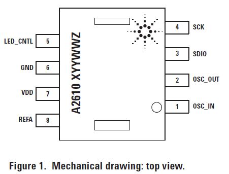
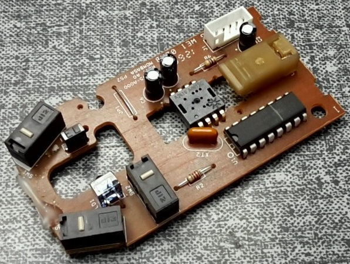
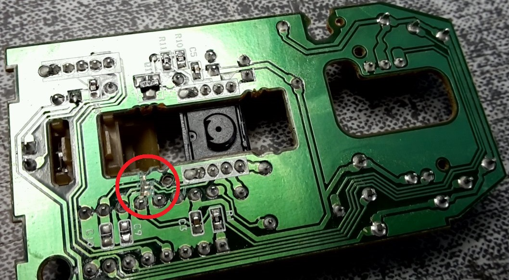
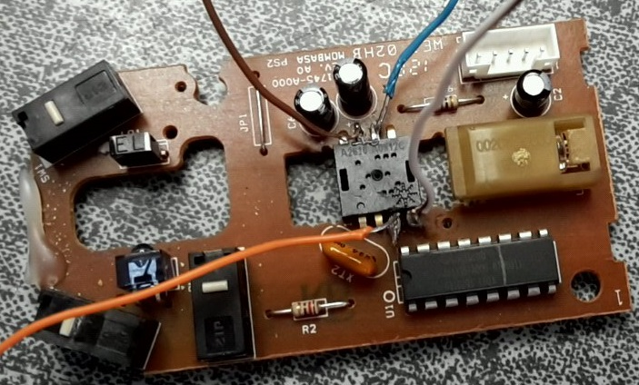
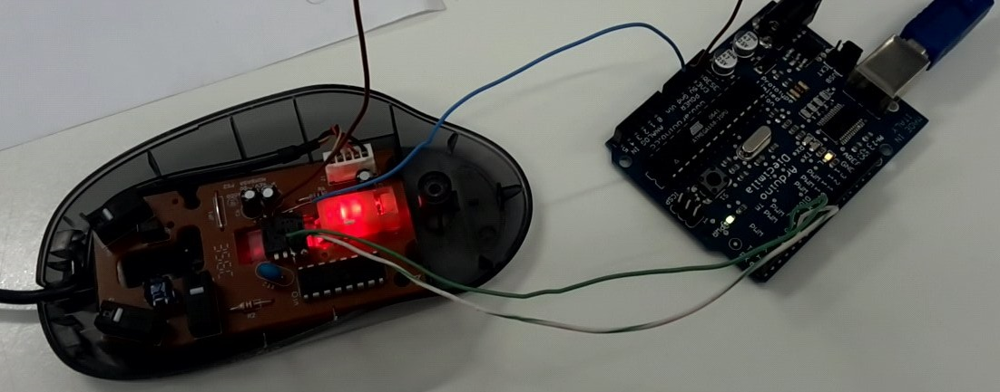

È possibile utilizzare il sensore interno contenuto nei mouse da computer Per rilevare lo spostamento compiuto da un oggetto che si muove a rasoterra, come ad esempio un robot aspirapolvere o automobiline radiocomandate. Questo documento spiega come utilizzare i sensori più comuni, ovvero: AN3101, ADNS-2610, ADNS-2083 o ADNS-2051. È necessario scaricare la libreria Opti-Mouse e includerla nello sketch.

#include "ADNS2610.h"
#define SCLK 2 // Serial clock pin on the Arduino
#define SDIO 3 // Serial data (I/O) pin on the Arduino
ADNS2610 Optical1 = ADNS2610(SCLK, SDIO);
signed long x = 0; // Variables for our 'cursor'
signed long y = 0; //
int c = 0; // Counter variable for coordinate reporting
void setup()
{
Serial.begin(38400);
Optical1.begin(); // Resync (not really necessary?)
}
void loop()
{
x += Optical1.dx(); // Read the dX register and in/decrease X with that value
y += Optical1.dy(); // Same thing for dY register.....
if (c++ & 0x80)
{ // Report the coordinates once in a while...
Serial.print("x=");
Serial.print(x, DEC);
Serial.print(" y=");
Serial.print(y, DEC);
Serial.println();
c = 0; // Reset the report counter
}
}